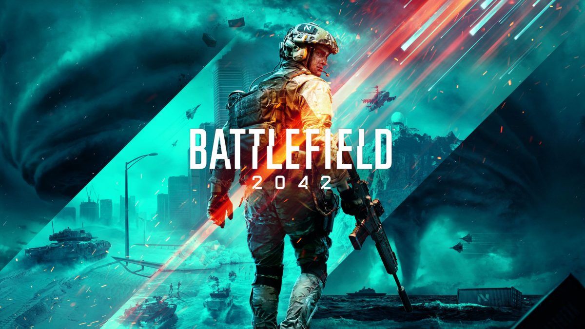
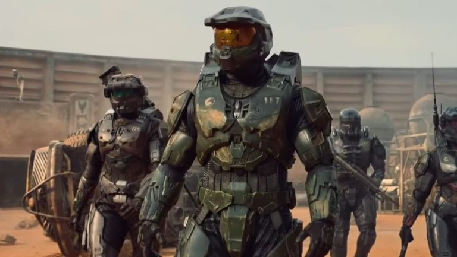

Acerca de la página
¿Qué es FrikStore?
Puedes ver mas información de nuestra sucursal en la sección "Nuestra Empresa".
Ultimas Noticias
EA excusa las malas criticas que tuvo Battlefield 2042, diciendo que todo fue culpa de las comparaciones a Halo Infinite.
17/02/2022.

Segun EA, el lanzamiento y los parches de Battlefield 2042 significaron que "el juego era estable" y "la recepcion inicial de la critica fue buena". Sin embargo según EA, las cosas dieron un giro, y ese giro fue el lanzamiento sorpresa de Halo: Infinite Multiplayer. La comparación de ambos juegos no fue favorable porque Halo Infinite era un titulo muy pulido mientras que Battlefield 2042 tenía muchos bugs y no estaba tan pulido.
Estudio Shaft hace un video especial al manga de Bakemonogatari.
17/02/2022.
Para promocionar la salida del manga de Bakemonogatari, Studio Shaft decidio hacer un video especial.
puedes ver el vídeo aquí
Antes de su estreno, la esperada serie "Halo" ya tiene asegurada una segunda temporada.
16/02/2022.

“Para Paramount+, Halo es una oportunidad de expansión y de construcción de un universo, y nos entusiasma ofrecer a los fans la posibilidad de esperar una segunda temporada antes de estrenar la serie el próximo mes”, dijo Tanya Giles, directora de programación de la plataforma, a The Hollywood Reporter (THR).
puedes ver el trailer aquí